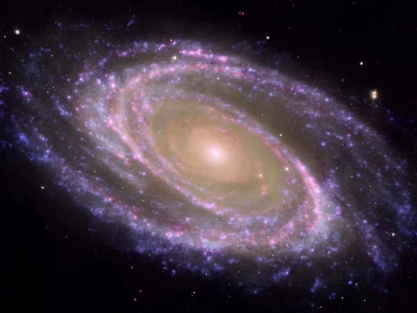
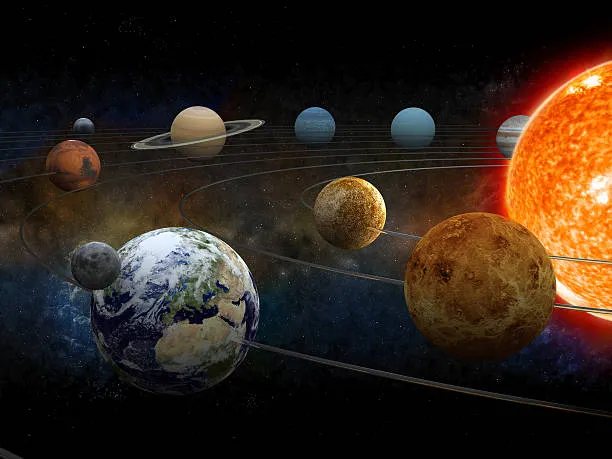

En algún lugar, no somos mas que un punto iluminado entre millares

Una simple mirada al cielo nocturno nos puede demostrar lo pequeños y grandes que podemos ser, mas también lo especial que es el que existamos en este lugar en este momento, de tantos planetas que pueden existir.
En este sitio web, exploraremos el vasto universo que nos rodea, desde las estrellas más cercanas hasta las galaxias más lejanas.
Las Galaxias
Se estima que hay 1 billón de galaxias en el universo observable. De las cuales la mas cercana a la nuestra se encuentra a 2,5 millones de años luz de distancia.
Una Galaxia es un conjunto de estrellas, nubes de gas, planetas, polvo cósmico, materia oscura y energía unidas gravitatoriamente en una estructura más o menos definida. Pueden ser elípticas, espirales, lenticulares e irregulares. Las galaxias irregulares son, normalmente, el resultado de perturbaciones provocadas por la atracción gravitacional de galaxias vecinas.
Estrellas
Son un cuerpo celeste que brilla con luz propia debido a las reacciones termonucleares que ocurren en su núcleo. Estas reacciones convierten el hidrógeno en helio, liberando una enorme cantidad de energía en forma de luz y calor. Las estrellas pueden variar en tamaño y temperatura, siendo algunas tan frías que pueden tener temperaturas superficiales de aproximadamente 2000 ºC, mientras que otras pueden alcanzar hasta 50 000 ºC.
Nuestro sistema solar cuenta con solo una estrella, el sol

Planetas
Un planeta es un objeto astronómico que orbita una estrella y que es lo suficientemente masivo como para ser redondeado por su propia gravedad, pero no lo suficientemente masivo como para causar fusión termonuclear, y que ha despejado su región vecina de planetesimales. Nuestro sistema solar alberga ocho planetas según la clasificación de la NASA.
